Here is one of the most beautiful, and most repeated, tricks in all of artificial intelligence. You take something enormous — a giant matrix, a high-resolution image, a swelling memory cache — and you force it through a narrow waist, down into a small space. You do your work there, in the small space. And then, when you need the big thing back, you project it up again.
The astonishing part isn't the squeezing. The astonishing part is that almost nothing falls out on the way through. You'd expect that crushing a million numbers down to a few hundred would be catastrophic — and it simply isn't. The big thing was never really "full." We'll see exactly why in a moment, but first, feel the shape of it.
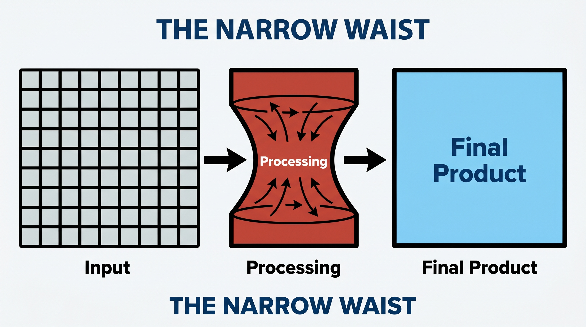
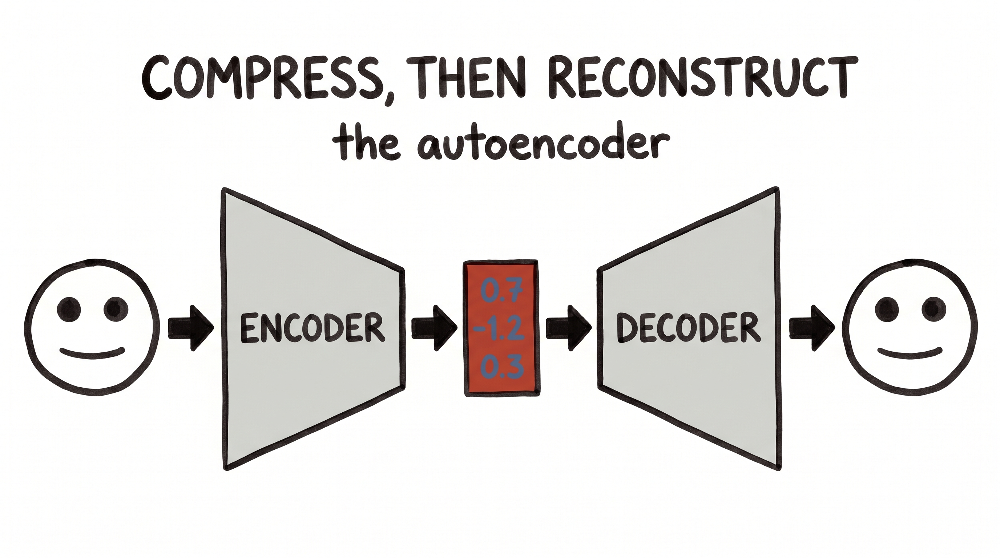
Why does crushing a thing barely hurt it? Because big things in the real world are mostly empty of new information. A million-pixel photo of a face is not a million independent facts — change one pixel and you can guess its neighbours; the whole image lives on a thin, curved surface inside the giant space of all possible images. Mathematicians call that surface a manifold, and the same is true of weight matrices: they look enormous, but their rows mostly repeat each other — they are nearly low-rank.
So the "few hundred numbers" you keep aren't a lossy summary of a rich thing. They're closer to the real number of knobs the thing had all along. Here — try it yourself. Below is a squiggle that looks genuinely complicated. Drag the slider to keep only the first few "numbers" that describe it, and watch how quickly the red reconstruction snaps onto the original.
A handful of numbers already rebuild the whole squiggle. That's the manifold, made visible.
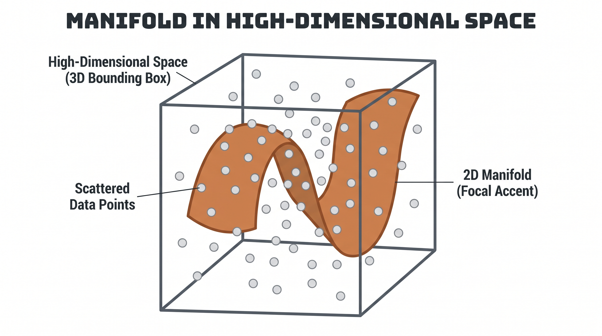
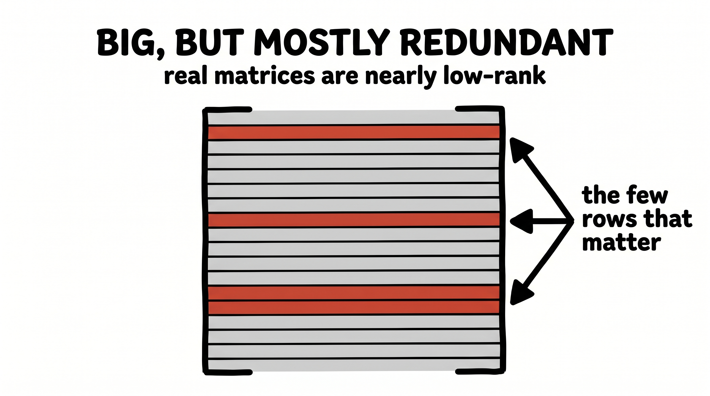
When a thing is too big, look for its narrow waist. Squeeze it down to the few dimensions that actually carry the information, work there, and project back up. The real world is far lower-dimensional than it looks.
Start with the most literal example, because it's the cleanest. Long before deep learning, in 1994, there was a tiny data-compression algorithm called byte-pair encoding. Its rule is almost childishly simple: find the most frequent pair of neighbouring symbols, and replace it with a single new one. Then do it again. And again.
Feed it the word "lower" alongside a mountain of text, and it notices that "e" and "r" sit together constantly, so it fuses them into "er"; then "lo" and "w" into "low"; and soon a long string of single letters has collapsed into a handful of reusable chunks. Modern language models borrowed this exact algorithm to build their vocabularies — every token you met in Lecture 4 was carved out this way.
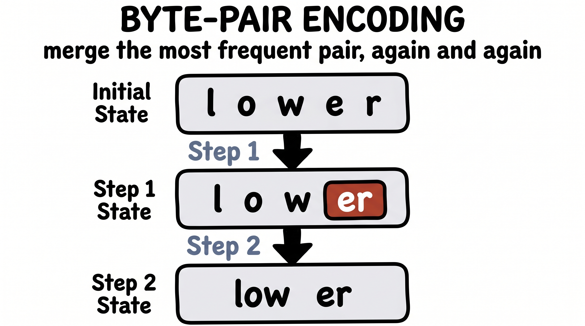
But notice this is a slightly different flavour of compression from everything that follows. Byte-pair encoding doesn't project anything into a lower dimension and back; it finds a shorter code for the same text by reusing what repeats. It's the "say it briefly" cousin — the Occam's-razor kind. Worth knowing it's there, because it sets up the deeper, geometric kind we turn to now.
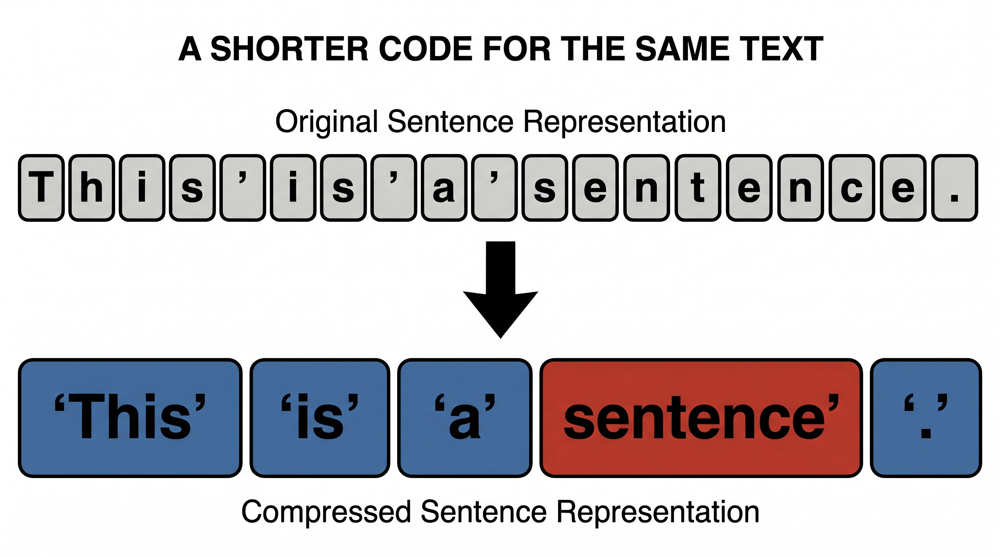
Now the geometric kind, and a gorgeous example of it. Generating an image pixel by pixel is brutally expensive — a 512×512 colour image is over 750,000 numbers, and diffusion has to revisit all of them dozens of times. So Stable Diffusion simply refuses to work there.
Instead it keeps a little autoencoder — a VAE — that squeezes the full image down into a compact latent grid, perhaps 64×64×4, roughly fifty times smaller. All the slow, hard work of diffusion — the denoising, the dreaming up of new pictures — happens entirely inside that tiny latent room. Only at the very end does the decoder project the finished latent back up into a full-resolution image. The model paints in a closet and hangs the result on a wall.
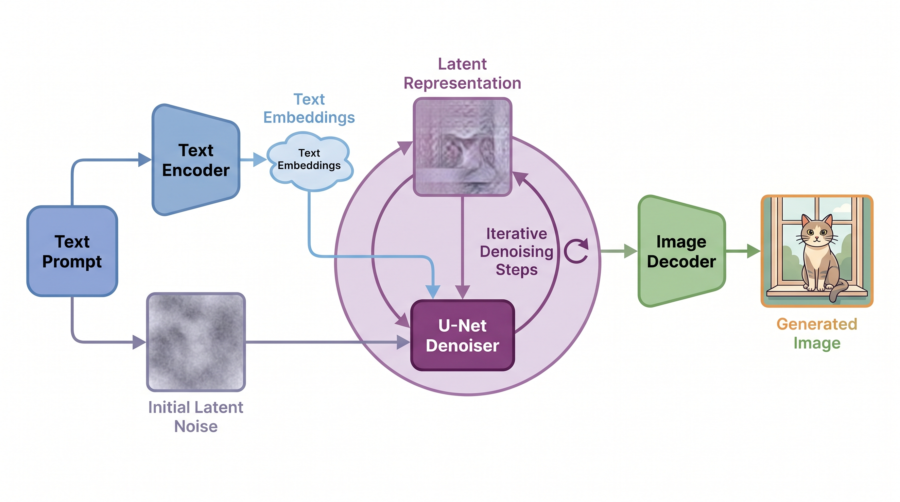
This single decision — compress first, generate in the latent, decode last — is most of why image generation went from a research curiosity to something that runs on your laptop. The narrow waist bought a fifty-fold discount, and the pictures barely noticed.
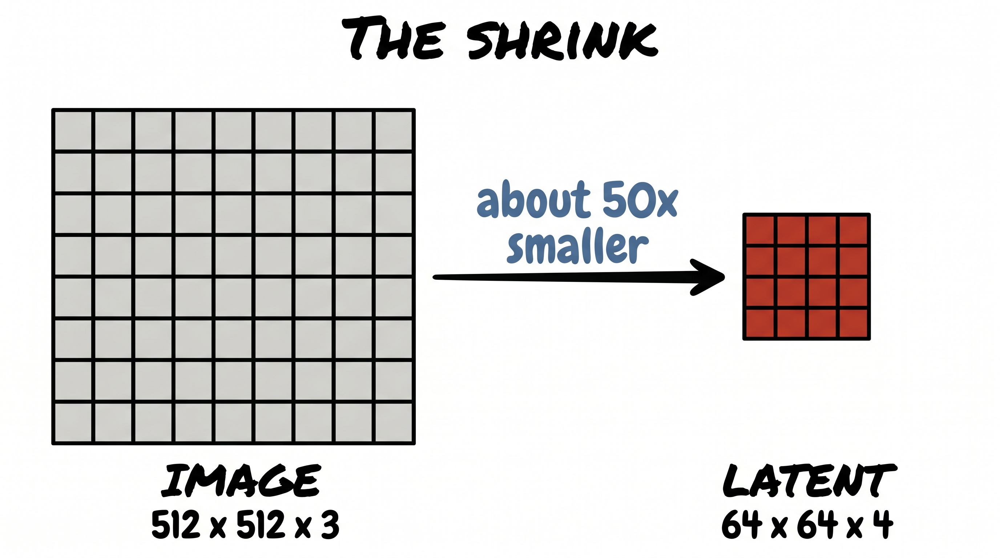
Here is the same move at the bleeding edge. When a language model generates text, it has to remember every token it has already seen — specifically, a "key" and a "value" vector for each one. This KV cache grows with every single token, and for long conversations it becomes the main thing eating your memory. It's the swelling cache that quietly limits how much context a model can afford.
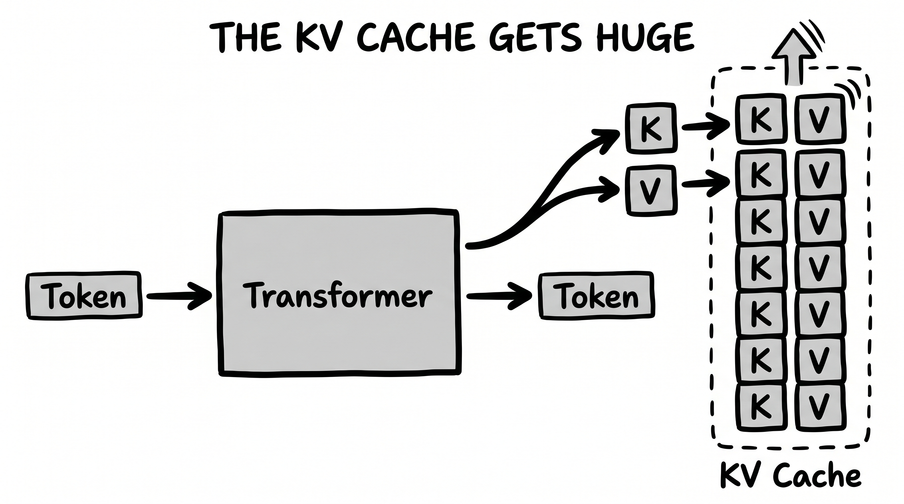
DeepSeek's Multi-head Latent Attention applies our trick exactly. Rather than store the big key and value vectors for every token, it squeezes each one down into a single small latent vector and caches only that. When the model actually needs the keys and values, it projects the little latent back up into the full-size vectors on the fly. The cache shrinks dramatically, the model's quality barely moves — because, once again, those key and value vectors were nearly low-rank all along.
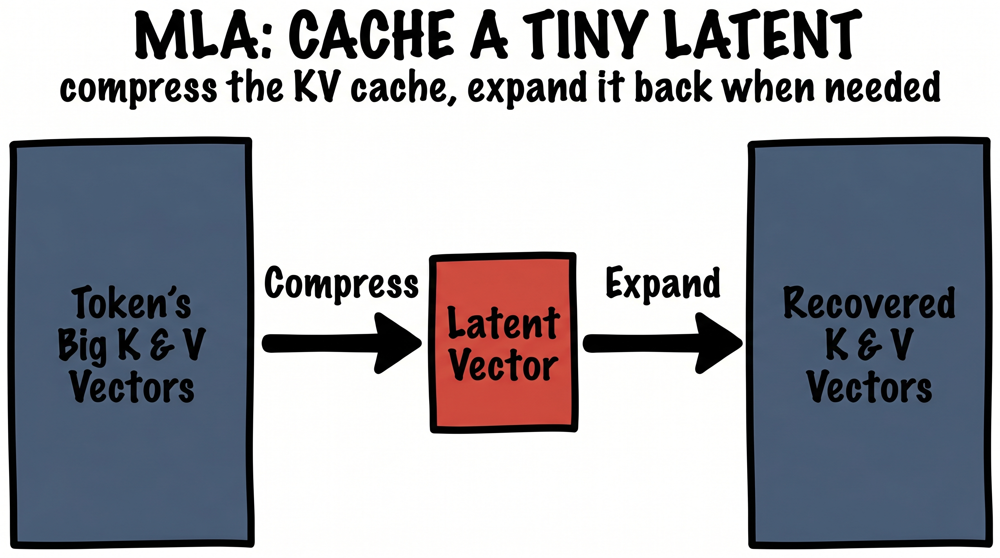
If you want the move in its purest, most naked form, look at LoRA — the technique nearly everyone uses to fine-tune a giant model on a budget. A modern model's weights live in enormous square matrices. To adapt the model to a new task, you want to change those weights — to add some update matrix the same enormous size. Training that directly would cost a fortune.
LoRA's insight is that the update you actually need is nearly low-rank — so don't store it full-size. Force it through a rank-r waist:
You freeze the original billions of weights and train only the skinny pair A and B — often a few thousand numbers in place of a few billion. Down to rank r, back up to full size. It is the compression mental model with nothing else attached: no images, no attention, no story — just a big change, recognised as secretly small.
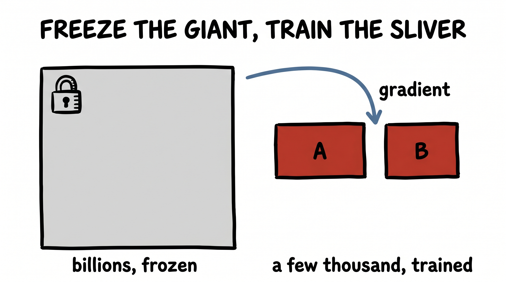
Stand back and the repetition is almost funny. An image, a memory cache, the change to a weight matrix — three completely different things, in three completely different corners of the field, and the exact same gesture in each: pinch it through a narrow waist, do the work small, project it back up. Once you've seen the waist, you start finding it everywhere.
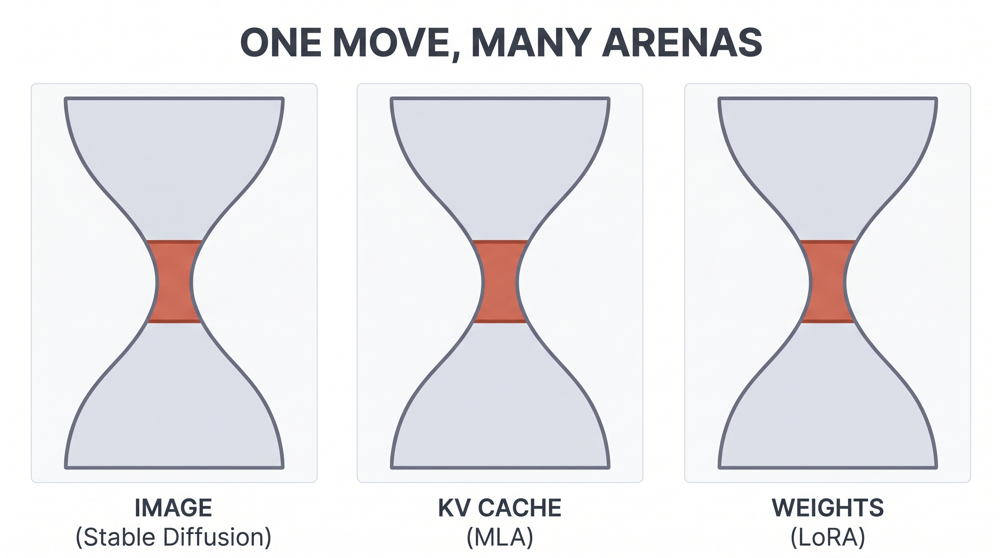
So let's take the move somewhere it isn't obvious it belongs — and see that you could have reached for it yourself. Reinforcement learning has a brutal version of the bigness problem: an agent learning to play a game has to look at the raw screen, frame after frame, millions of times. Learning directly from all those pixels is painfully slow.
The World Models approach does the unthinkably simple thing. It puts a little autoencoder in front of the agent and crushes every game frame down into a tiny latent vector — call it z, just a few dozen numbers. Then a small predictor learns to dream forward in z-space ("given this latent and this action, here's the next latent"), and a minuscule controller learns to play using nothing but those latents.
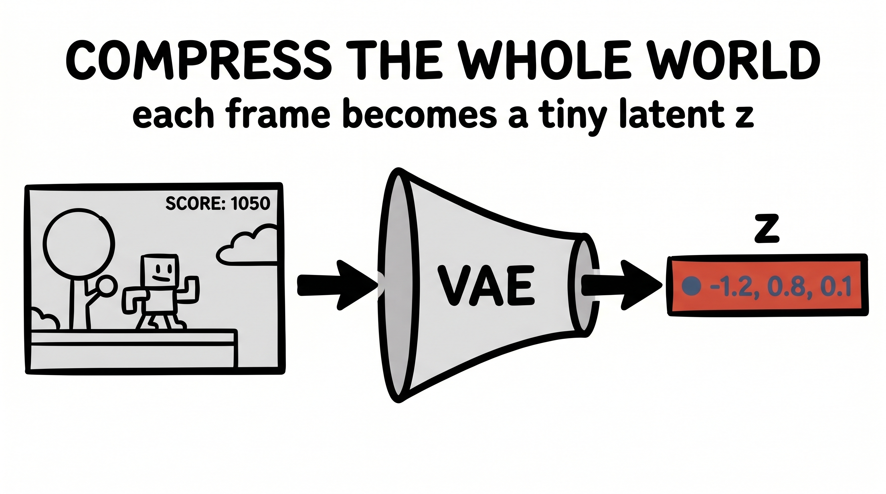
The agent never really acts on the world. It acts on a compressed dream of the world — and that turns out to be enough to learn to play, often without touching the real game at all during training. The same modern lineage (PlaNet, Dreamer) builds entire agents that learn almost entirely inside the small latent space. If you'd internalised the compression move, you might have proposed it yourself: the screen is too big, so find its narrow waist, and let the agent live in there.
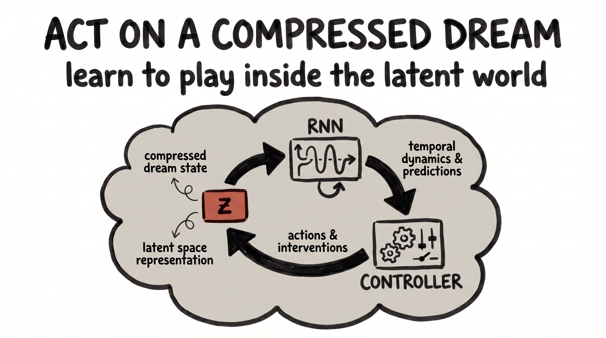
That's the whole lecture. The next time something in your work is too big — too much memory, too much compute, too many parameters to train, too many pixels to generate — don't accept the bigness. Ask where the narrow waist is. Ask how few numbers really carry the information. Because the answer, far more often than feels possible, is "surprisingly few."
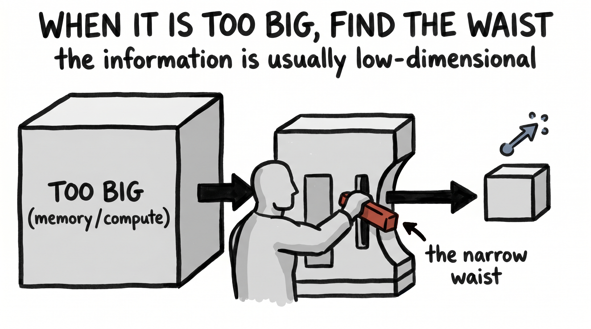
When a thing is too big, find its narrow waist. Real images, real weight matrices, real game screens are far lower-dimensional than they look — so squeeze them down to the few numbers that matter, work there, and project back up. The information rarely goes away. The cost almost always does.